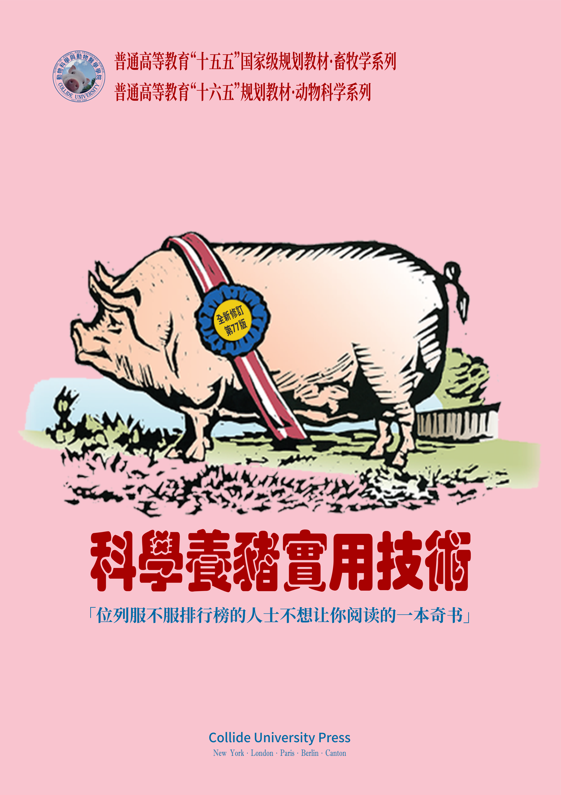

Baby Logic
Lecture Notes
An introductory book built upon several lectures about baby logic.
Preface

「邏輯」有很多種，「邏輯學」也有很多種。不同的人學習邏輯學有不同的目的。本筆記中的「邏輯學」知識主要服務於語言、思維的分析，不追求邏輯學在其他領域的功能。
- 徐明, 2008. 符号逻辑讲义[M].武汉:武汉大学出版社.
- 胡龙彪,黄华新, 2006. 逻辑学教程[M].杭州:浙江大学出版社.
本筆記大致列出邏輯基礎學習階段的主要材料，主要參考（chāoxí）以下課本攢集而成：
- 徐明, 2008. 符号逻辑讲义[M].武汉:武汉大学出版社.
- 胡龙彪,黄华新, 2006. 逻辑学教程[M].杭州:浙江大学出版社.
- 黄华新,张则幸, 2011. 逻辑学导论（第二版）[M].杭州:浙江大学出版社.
- 安德鲁·辛普森, 2005. 离散数学导学[M].冯速,译.北京:机械工业出版社.
- Tidman P, Kahane H, 2002. Logic and Philosophy : A Modern Introduction[M]. Ninth. Boston : Cengage Learning.
- Smith N J J, 2012. Logic : The Laws of Truth[M]. New Jersey : Princeton University Press.
- Copi I M, Cohen C, Rodych V, 2018. Introduction to Logic[M]. New York : Routledge.
- Bergmann M, Moor J, Nelson J, 2014. The Logic Book[M]. Sixth. New York : McGraw‑Hill.
其中，直接取自《符號邏輯講義》的材料最多，取自《邏輯學導論》較多，素樸集合論、表列演算則直接取自完全開源的 Open Logic Project 項目源碼。
- 徐明, 2008. 符号逻辑讲义[M].武汉:武汉大学出版社.
- 胡龙彪,黄华新, 2006. 逻辑学教程[M].杭州:浙江大学出版社.
Learning features
Sometimes other fields might add interested value to the understanding of the computational biology area. This feature remarks some of them and aim to explain these intersections.
As you move forward in the computational biology field you will find that there are several tips and tricks (mainly from the command line) as well as some random CLI programs that can leverage your daily workflow as a researcher. Using this feature we highlight some of those that appeared to linger on the field.
To help you consolidate your understanding we end most chapters with important messages or concepts that help you evaluate yourself as you move forward on the lessons.
When experimenting with the CLI and many other computational tools it is common to face several known errors and drawbacks. Then, we present some of them and how to sort them out.
Since focused on a competences learning approach we have highlighted several real-life (but basic) challenges a researcher faces when approaching computational biology problem (from tool selection, usage and result analysis). Therefore the book section challenges presents a selection of these problems that will later be approached by a computational biology strategy (mainly from the CLI).